1. 시작하기
공모주 투자 수익 관리 서비스는 투자자의 청약부터 배정, 매도까지의 전 과정을 기록하고 최종 수익을 계산해 주는 도구입니다. 하나의 로그인 계정으로 여러 투자자를 관리하고, 각 투자자의 여러 증권사 계좌에서 발생한 거래를 지속적으로 기록할 수 있습니다.
- 투자자 등록 (본인, 가족 등)
- 증권계좌 등록 (증권사와 계좌번호)
- 공모주 청약 기록
- 배정 결과 기록
- 매도 기록 (분할 매도 가능)
- 수수료 및 세금 입력
- 수익 및 수익률 자동 계산 확인
2. 가입과 로그인
서비스를 이용하기 위해서는 먼저 계정을 생성하고 로그인해야 합니다. 비공개 운영 방식으로 가입 후 관리자 승인이 필요합니다.
가입하기
- 로그인 화면에서 "계정이 없으신가요? 가입하기" 링크를 클릭합니다.
- 이메일, 비밀번호, 이름을 입력합니다.
- "가입하기" 버튼을 클릭합니다.
- "가입 신청이 접수되었습니다. 관리자가 승인하면 로그인할 수 있습니다." 안내가 나타납니다.
로그인 없이 볼 수 있는 화면. 공모주 일정 달력과 공모주 상세는 로그인하지 않아도 볼 수 있습니다. 로그아웃 상태의 상단 메뉴에는 공모주 일정·로그인·가입하기만 보이고, 상세 화면의 "로그인하고 청약 등록하기"로 로그인 후 청약 등록으로 이어집니다.
이미 계정이 있다면 가입 화면 아래의 "이미 계정이 있으신가요? 로그인" 링크로 로그인 화면에 갈 수 있습니다.
| 입력 항목 | 필수 여부 | 설명 |
|---|---|---|
| 이메일 | 필수 | 로그인용 계정으로 사용되며, 올바른 형식(input@domain.com)이어야 합니다. |
| 비밀번호 | 필수 | 최소 8자 이상, 문자·숫자·특수문자 중 2종류 이상 조합해야 합니다. |
| 이름 | 필수 | 2자 이상 50자 이하의 이름을 입력합니다. |
| 오류 문구 | 해결 방법 |
|---|---|
| 필수 입력 항목입니다. | 비워둔 입력 항목이 없는지 확인합니다. |
| 올바른 이메일 형식을 입력해 주세요. | @ 기호가 포함된 형식인지 확인합니다 (예: user@example.com). |
| 비밀번호는 최소 8자 이상이어야 합니다. | 8자 이상의 비밀번호를 입력하고, 문자·숫자·특수문자 중 최소 2종류를 포함합니다. |
| 이름은 2자 이상 50자 이하여야 합니다. | 2자 이상 50자 이하의 이름을 입력합니다. |
| 이미 사용 중인 이메일입니다. | 다른 이메일로 가입하거나, 이미 가입했다면 로그인합니다. |
| 관리자 승인 대기 중입니다 | 관리자에게 승인을 요청한 후 다시 시도합니다. |
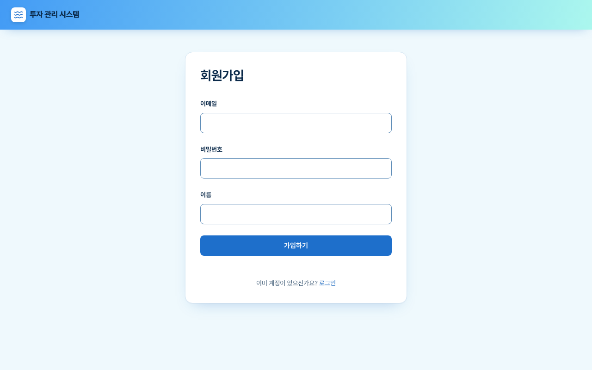
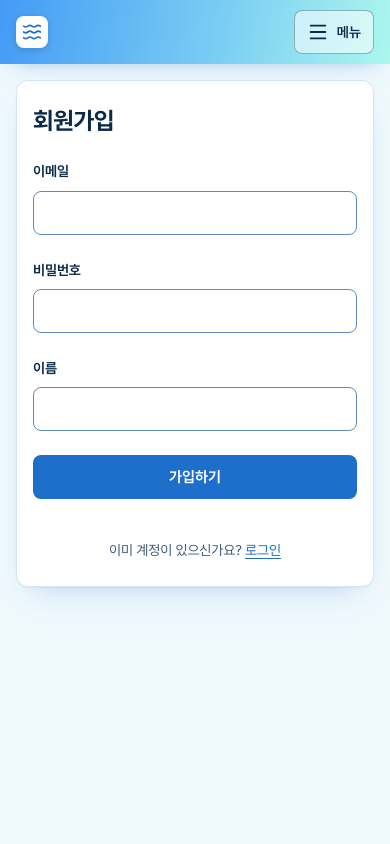
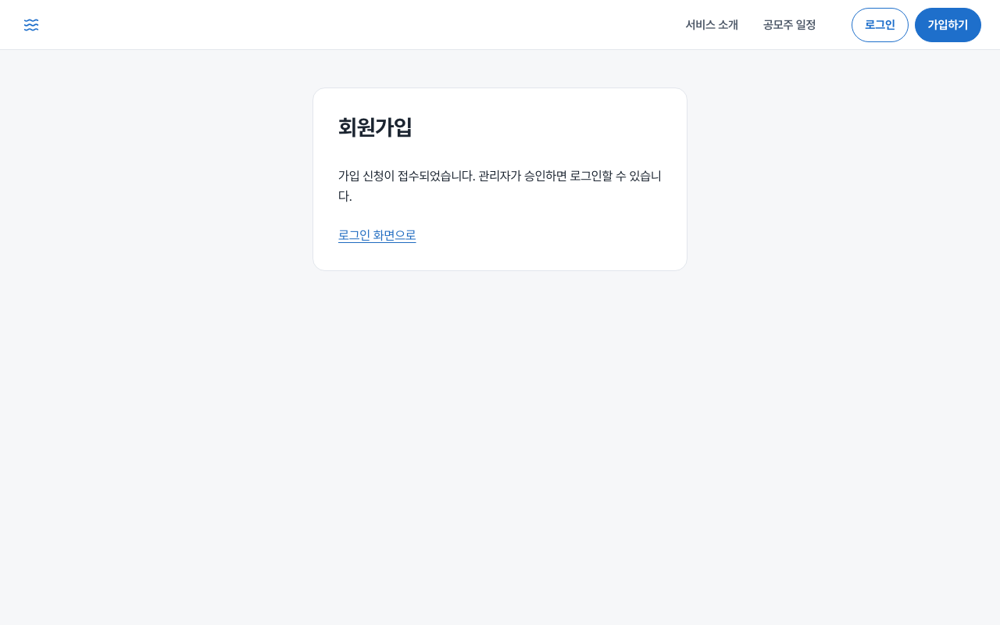
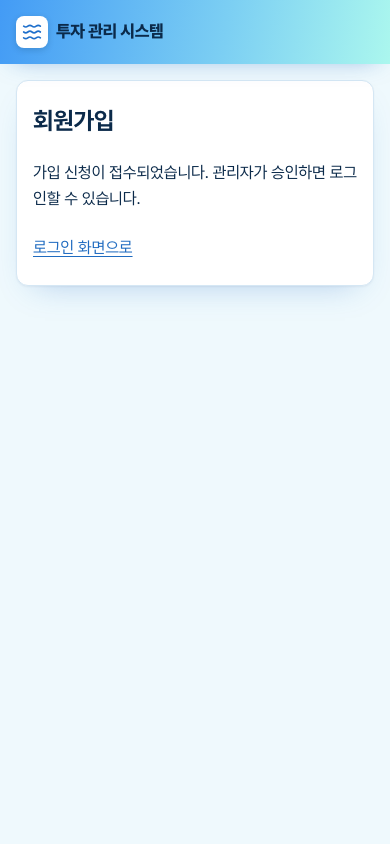
로그인하기
- 로그인 화면에서 등록한 이메일과 비밀번호를 입력합니다.
- "로그인" 버튼을 클릭합니다.
- 관리자 승인이 완료된 경우 대시보드로 이동합니다.
| 입력 항목 | 필수 여부 | 설명 |
|---|---|---|
| 이메일 | 필수 | 가입할 때 입력한 이메일을 입력합니다. |
| 비밀번호 | 필수 | 가입할 때 입력한 비밀번호를 입력합니다. |
| 오류 문구 | 해결 방법 |
|---|---|
| 이메일 또는 비밀번호가 올바르지 않습니다. | 입력한 이메일과 비밀번호를 다시 확인합니다. |
| 관리자 승인 대기 중입니다 | 관리자에게 승인을 요청한 후 다시 시도합니다. |
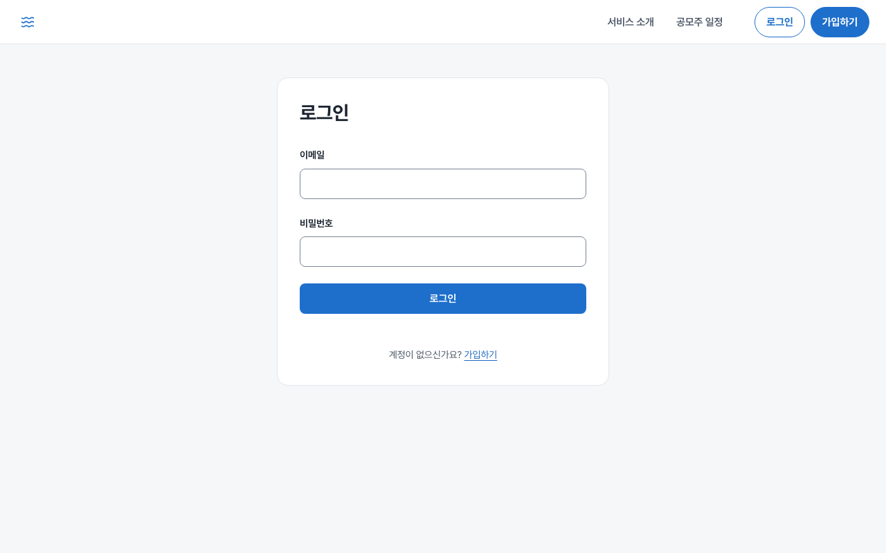
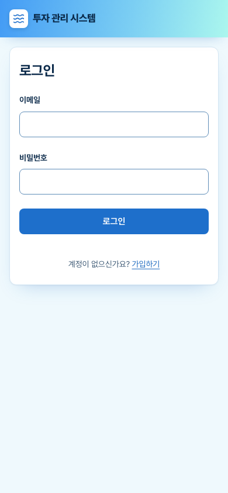
3. 기본 정보 등록
로그인 후에는 먼저 투자자와 증권계좌를 등록해야 합니다. 투자자는 실제 투자 주체(본인, 가족 등)를 나타내고, 증권계좌는 해당 투자자가 보유한 증권사 계좌 정보를 저장합니다.
투자자 등록하기
- 상단 메뉴의 "등록"을 열고 "투자자"를 선택합니다.
- 표시 이름과 관계를 선택합니다 (본인, 배우자, 부모, 자녀, 기타).
- "등록" 버튼을 클릭합니다.
| 입력 항목 | 필수 여부 | 설명 |
|---|---|---|
| 표시 이름 | 필수 | 투자자를 식별하기 위한 이름으로, 50자 이하여야 합니다. |
| 관계 | 선택 | 본인과의 관계를 선택합니다 (선택 안 함도 가능). |
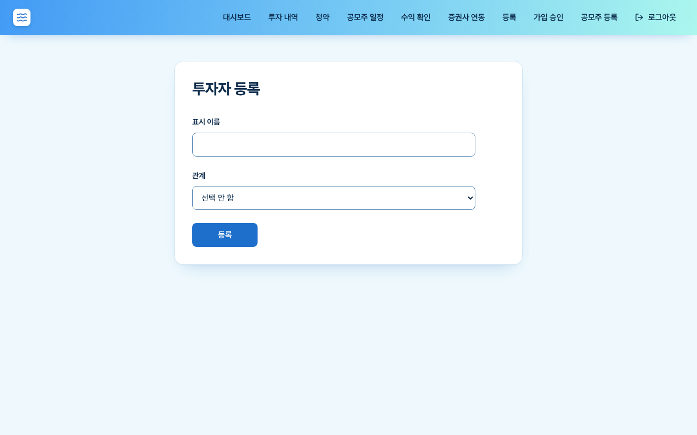
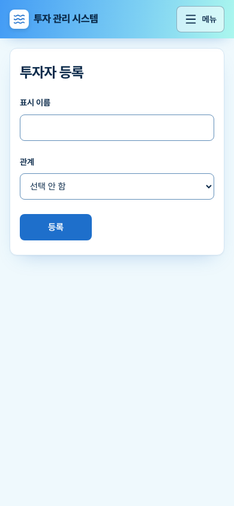
증권계좌 등록하기
- 투자자를 등록하면 이어서 증권계좌 등록 화면으로 이동합니다.
- 증권사를 선택하고 계좌번호를 입력합니다 (10~16자리 숫자, 하이픈은 자동으로 들어갑니다).
- 필요 시 계좌명과 기본 계좌 여부를 설정합니다.
- 등록이 끝나면 "등록 완료: 마스킹된 계좌번호" 알림이 뜨고 대시보드로 이동합니다.
- "등록" 버튼을 클릭합니다.
| 입력 항목 | 필수 여부 | 설명 |
|---|---|---|
| 증권사 | 필수 | 등록하려는 증권사를 목록에서 선택합니다. |
| 계좌번호 | 필수 | 10~16자리 숫자의 계좌번호를 입력합니다 (예: 1234-5678-90). 한국투자증권 계좌는 10자리(8자리+2자리)이며, 증권사 연동을 쓰려면 이 형식이어야 합니다. |
| 계좌명 (선택) | 선택 | 계좌를 식별하기 위한 이름입니다 (예: 주력 계좌). |
| 기본 계좌로 설정 | 선택 | 해당 계좌를 기본 계좌로 설정할지 여부를 선택합니다. |
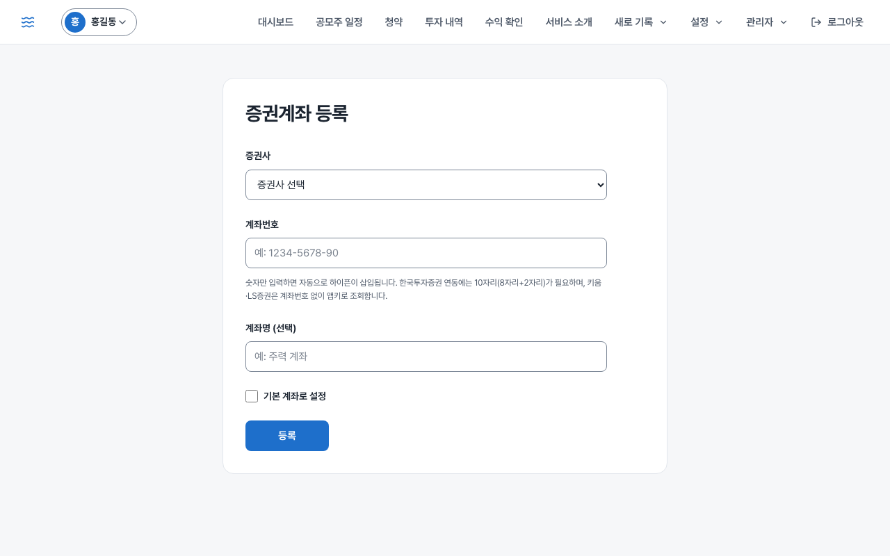
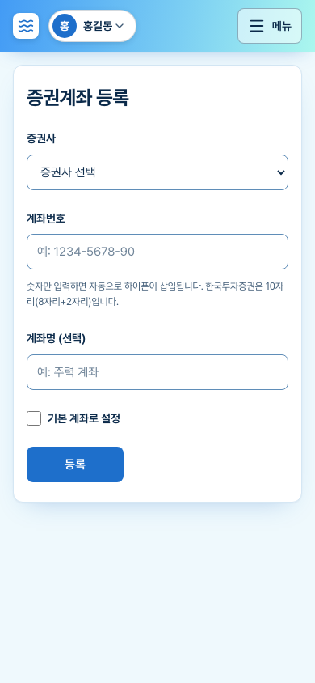
4. 공모주 일정 보기
공모주 일정 화면에서는 공모주의 청약 기간과 상장일을 달력으로 확인할 수 있습니다. 청약 기간은 연속된 날짜 칸을 가로지르는 막대 하나로 이어져 보이고, 한 주를 넘기면 다음 주 줄에서 이어집니다(이어지는 쪽 끝은 모서리가 둥글지 않습니다). 상장일은 하루짜리 막대로 표시됩니다. 같은 주에 기간이 겹치는 공모주는 막대가 아래 줄로 쌓입니다.
- 상단 메뉴에서 "공모주 일정"을 선택합니다.
- 달력이 표시되며, 오늘 날짜가 강조되어 보입니다.
- 이전 달/다음 달 버튼을 누르거나 "오늘" 버튼을 누릅니다.
- 날짜 칸의 위쪽(날짜 숫자가 있는 줄)을 누르면 그날의 일정이 달력 오른쪽(모바일에서는 아래)에 자세히 표시됩니다.
- 달력의 막대나 오른쪽 일정 목록의 공모주를 누르면 그 공모주의 상세 페이지로 이동합니다.
| 일정 종류 | 표시 방법 |
|---|---|
| 청약 | 청약 시작일부터 종료일까지 이어진 파란 막대입니다. |
| 상장 | 상장일 하루에 표시되는 연두색 막대입니다. |
보고 싶은 일정 종류만 고르기
달력 위의 청약, 상장 버튼으로 보고 싶은 종류만 켜고 끌 수 있습니다. 꺼진 종류는 달력과 오른쪽 일정 목록에서 모두 사라지고, 다시 누르면 돌아옵니다. 모두 보기를 누르면 모든 종류가 켜집니다. 선택한 종류는 주소에 저장되므로 새로고침하거나 주소를 공유해도 같은 화면이 나옵니다.
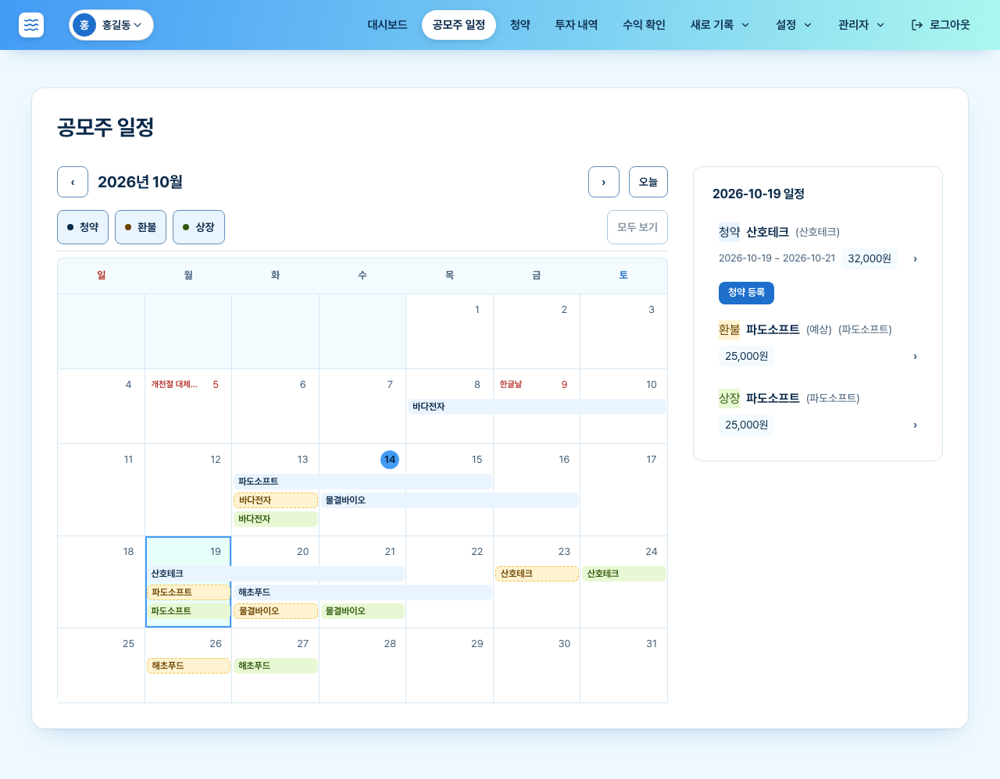
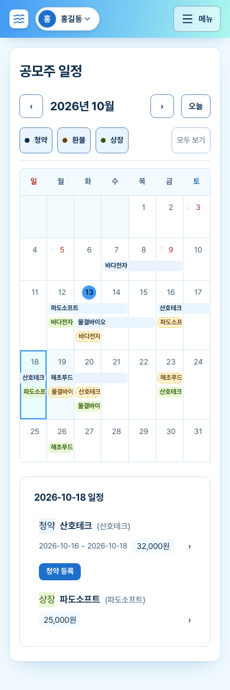
공모주 상세 보기
상세 페이지 위쪽에는 공모주명과 회사명, 그리고 상태가 표시됩니다. 상태는 오늘 날짜와 일정으로 자동 계산됩니다.
| 상태 | 기준 |
|---|---|
| 청약 예정 | 오늘이 청약 시작일 전입니다. |
| 청약 진행 중 | 오늘이 청약 시작일과 종료일 사이(당일 포함)입니다. |
| 청약 마감 | 청약 종료일이 지났고 아직 상장일 전이거나 상장일이 없습니다. |
| 상장 완료 | 오늘이 상장일이거나 그 이후입니다. |
본문에는 종목코드, 회차, 청약 시작일, 청약 종료일, 상장일, 확정 공모가, 희망 공모가(하단~상단), 공모 주식 수가 나옵니다. 아직 정해지지 않은 항목은 "-"로 표시됩니다. 아래의 청약 등록하기를 누르면 청약 등록 화면으로, 공모주 일정으로 돌아가기를 누르면 달력으로 돌아갑니다. 없는 공모주 주소로 들어오면 "공모주를 찾을 수 없습니다."가 표시됩니다.
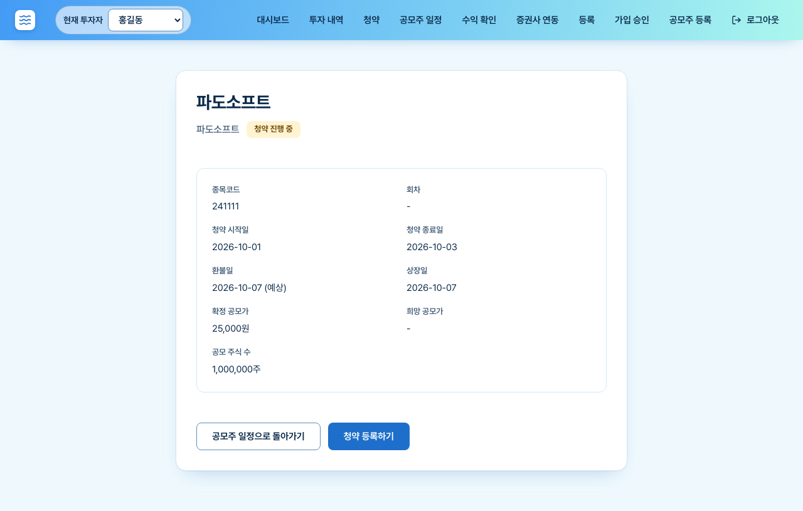
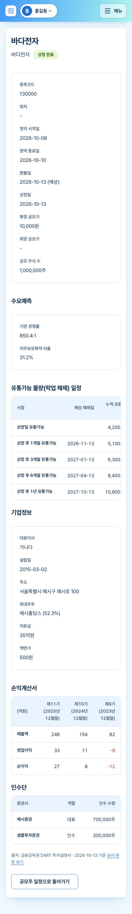
5. 거래 기록하기
청약 → 배정 → 매도 → 비용 순서로 기록합니다. 앞 단계가 있어야 다음 단계에서 고를 수 있습니다(예: 청약이 있어야 배정을 입력할 수 있고, 배정이 있어야 매도를 등록할 수 있습니다). 모든 등록 화면은 상단 메뉴의 등록에서 열 수 있습니다.
청약 등록하기
- 상단 메뉴 등록 → 청약을 엽니다.
- 투자자를 고르면 그 투자자의 증권계좌가 목록에 나타납니다. 투자자를 먼저 골라야 합니다.
- 공모주를 고릅니다(공모주 일정에 등록된 공모주가 목록에 나옵니다).
- 청약수량, 증거금, 청약일를 입력하고 필요하면 메모를 적습니다.
- 등록을 누르면 청약 목록으로 이동합니다.
| 항목 | 필수 | 입력 방법 |
|---|---|---|
| 투자자 | 필수 | 목록에서 선택 |
| 증권계좌 | 필수 | 선택한 투자자의 계좌 중에서 선택 |
| 공모주 | 필수 | 목록에서 선택 |
| 청약수량 | 필수 | 0보다 큰 정수 |
| 증거금 | 필수 | 0 이상 정수(원) |
| 청약일 | 필수 | 날짜 선택 |
| 메모 (선택) | 선택 | 자유 입력 |
| 표시되는 문구 | 해결 방법 |
|---|---|
| 투자자를 선택해 주세요. / 증권계좌를 선택해 주세요. / 공모주를 선택해 주세요. | 비어 있는 목록을 선택합니다. 증권계좌가 비어 있으면 먼저 투자자를 고르고, 계좌가 없으면 3장에서 증권계좌를 등록합니다. |
| 0 초과 정수를 입력해 주세요. / 0 이상 정수를 입력해 주세요. | 소수점이나 음수 없이 정수로 입력합니다(청약수량은 1 이상). |
| 이미 동일한 조건의 청약이 존재합니다. | 같은 청약을 이미 등록했는지 청약 목록에서 확인합니다. |
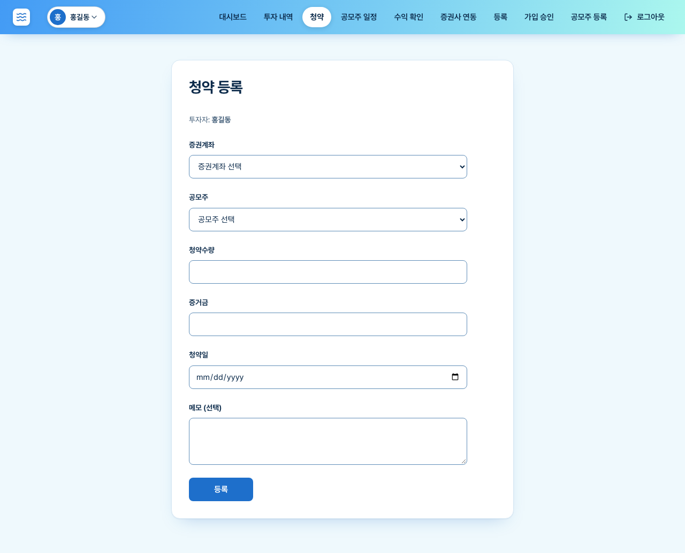
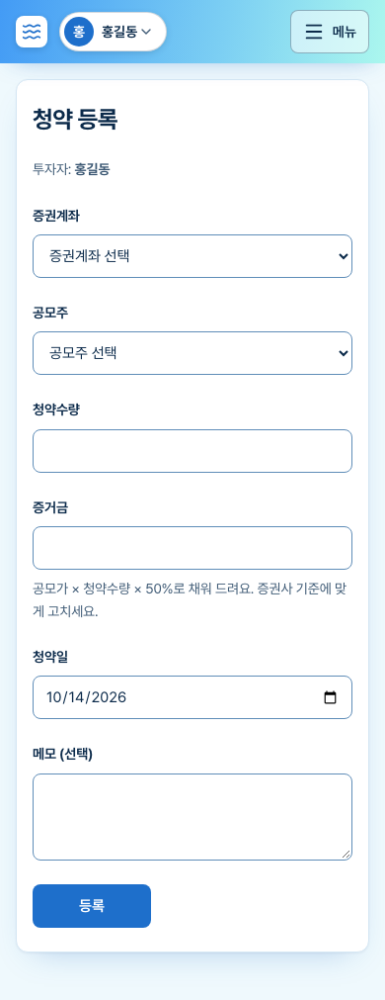
청약 목록 보기와 배정 입력
상단 메뉴 청약에서 등록한 청약을 카드로 볼 수 있습니다. 위쪽 전체 / 미배정 / 배정완료 버튼으로 걸러 볼 수 있고, 조건에 맞는 청약이 없으면 "표시할 청약이 없습니다."가 나옵니다. 미배정 카드에는 배정 입력 버튼이 있어, 누르면 그 청약이 선택된 배정 등록 화면으로 이동합니다.
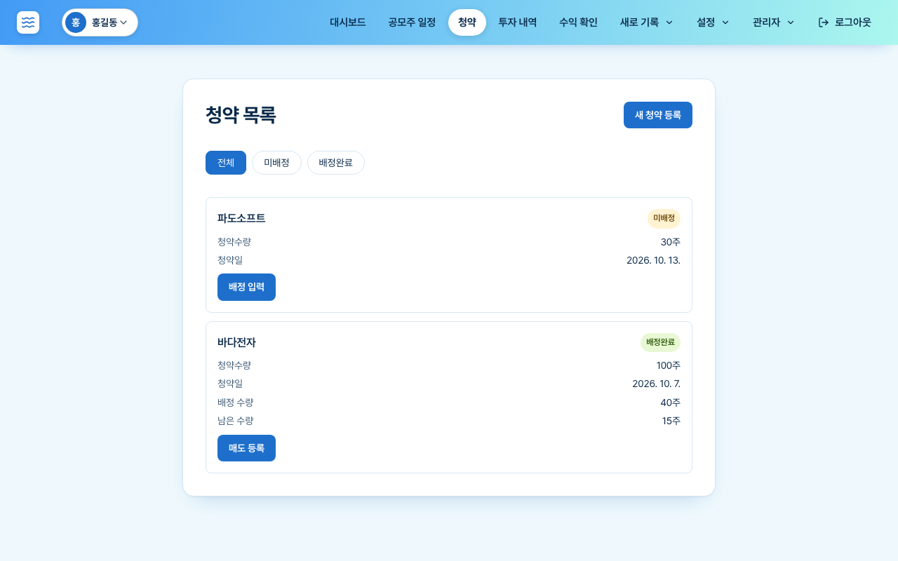
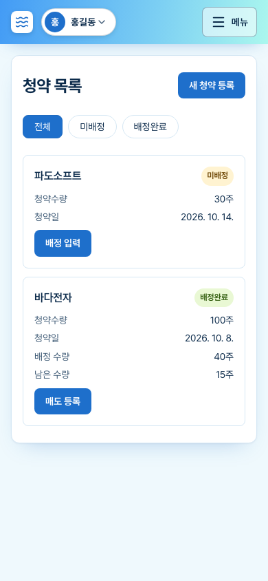
배정 등록하기
- 청약 목록에서 배정 입력을 누르거나, 상단 메뉴 등록 → 배정을 엽니다.
- 배정수량과 배정일시를 입력합니다. 못 받았다면 0이 아니라 배정을 등록하지 않습니다(배정수량은 1 이상).
- 가능하면 배정단가도 입력합니다. 총 투자금과 수익 계산의 기준이 되는 값입니다.
- 등록을 누르면 청약 목록으로 이동하고, 해당 청약은 배정완료로 바뀝니다.
| 항목 | 필수 | 입력 방법 |
|---|---|---|
| 배정수량 | 필수 | 0보다 큰 정수 |
| 배정일시 | 필수 | 날짜 선택 |
| 배정방식 (선택) | 선택 | 비례배정 / 추첨배정 / 선착순 |
| 배정단가 (선택) | 선택 | 0보다 큰 정수(원) |
| 비고 (선택) | 선택 | 자유 입력 |
| 표시되는 문구 | 해결 방법 |
|---|---|
| 선택된 청약을 찾을 수 없습니다. | 청약 목록으로 돌아가 배정할 청약을 다시 고릅니다. |
| 이미 동일한 청약에 대한 배정이 존재합니다. | 한 청약에는 배정을 한 번만 등록할 수 있습니다. 이미 등록돼 있습니다. |


매도 등록하기
- 상단 메뉴 등록 → 매도를 엽니다.
- 투자자 → 청약 → 배정 순서로 고릅니다. 청약을 고르면 아래 칸들이 자동으로 채워집니다: 매도일는 그 공모주의 상장일 09:00, 매도단가는 공모가, 매도수량은 배정받은 수량(이미 판 수량이 있으면 남은 수량)입니다. 모두 직접 고칠 수 있습니다.
- 실제 판 매도수량과 매도단가로 고칩니다(둘 다 필수).
- 실현손익에 증권사 앱에 표시되는 실현손익을 넣습니다. 처음에는 공식으로 계산한 값이 들어 있습니다.
- 공모주수수료는 기본 2,000원입니다. 증권사별로 다르면 고칩니다.
- 화면 아래 최종수익금(실현손익 − 공모주수수료)을 확인하고 등록을 누르면 투자 내역 화면으로 이동합니다.
- 분할 매도는 같은 배정에 대해 이 절차를 여러 번 반복해 등록합니다.
| 항목 | 필수 | 입력 방법 |
|---|---|---|
| 투자자 / 청약 / 배정 | 필수 | 순서대로 선택 |
| 매도수량 | 필수 | 0보다 큰 정수(배정 수량 범위 안). 배정받은 수량이 먼저 들어갑니다. |
| 매도단가 | 필수 | 0보다 큰 정수(원). 공모가가 먼저 들어갑니다. |
| 매도일 | 필수 | 날짜 선택. 상장일이 먼저 들어갑니다. |
| 세금 및 기타 수수료 (선택) | 선택 | 0 이상 정수(원). 증권사 매도 내역을 불러오면 자동으로 채워지고, 직접 등록할 때는 비워 두어도 됩니다. |
| 실현손익 | 필수 | 정수(원, 손실이면 음수). 증권사 앱의 실현손익을 넣습니다. |
| 공모주수수료 | 선택 | 0 이상 정수(원). 기본 2,000원입니다. |
| 표시되는 문구 | 해결 방법 |
|---|---|
| 배정을 선택해 주세요. | 청약을 고른 뒤 나타나는 배정을 선택합니다. 배정이 없다면 먼저 배정을 등록합니다. |
| 매도수량을 입력해 주세요. / 매도단가를 입력해 주세요. / 실현손익을 입력해 주세요. | 비어 있는 필수 칸을 채웁니다. |
| 실현손익이 (매도단가×수량 − 공모가×수량)보다 클 수 없습니다. | 증권사 실현손익이 계산 차익보다 클 수는 없습니다. 매도단가·수량이나 실현손익을 다시 확인합니다. |
| 공모가를 알 수 없어 세금 및 기타 수수료를 직접 입력해 주세요. | 공모가가 없는 공모주입니다. 세금 및 기타 수수료를 직접 넣습니다. |
| 배정을 찾을 수 없습니다. | 다시 선택합니다. |
| (서버가 보내는 안내 문구) | 수량이 배정 수량을 넘는 등 등록할 수 없는 경우 서버의 안내가 그대로 표시됩니다. 안내에 맞게 수량을 고칩니다. |
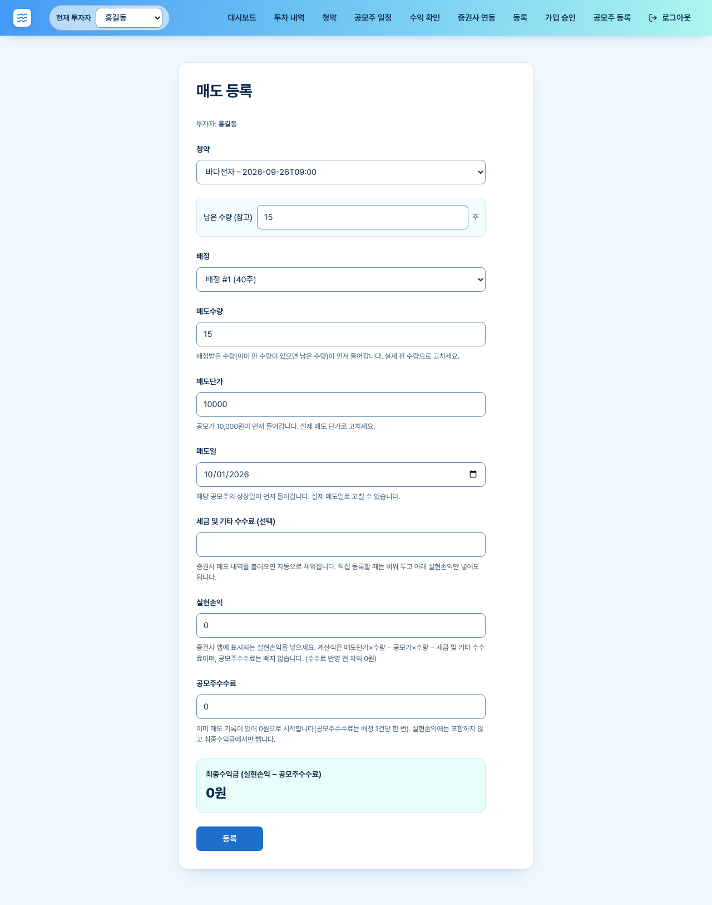
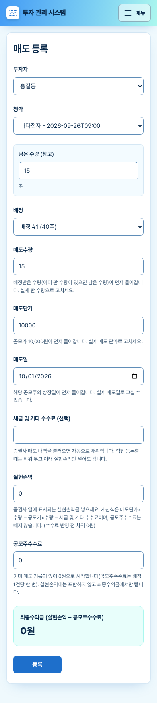
기타 비용 등록하기
공모주수수료 외에 청약에 든 기타 비용(예: 증거금 이자)을 기록하면 수익 계산에 반영됩니다. 상단 메뉴 등록 → 기타 비용에서 청약을 고르고 비용종류(예: 증거금 이자), 금액, 발생일시를 입력한 뒤 등록을 누르면 투자 내역 화면으로 이동합니다. 비용은 매도한 수량 비율만큼 나눠 수익에 반영됩니다. 공모주수수료는 매도 등록에서 입력하므로 여기에 같은 수수료를 또 등록하지 마세요(이중으로 빠집니다. 비용종류에 청약·공모주 수수료를 쓰면 경고가 뜹니다).
| 항목 | 필수 | 입력 방법 |
|---|---|---|
| 청약 | 필수 | 목록에서 선택 |
| 비용종류 | 필수 | 255자 이하 문구 |
| 금액 | 필수 | 0보다 큰 정수(원) |
| 발생일시 | 필수 | 날짜 선택 |
| 메모 (선택) | 선택 | 255자 이하 |
표시되는 문구 "청약을 찾을 수 없습니다."가 나오면 청약을 다시 선택합니다.
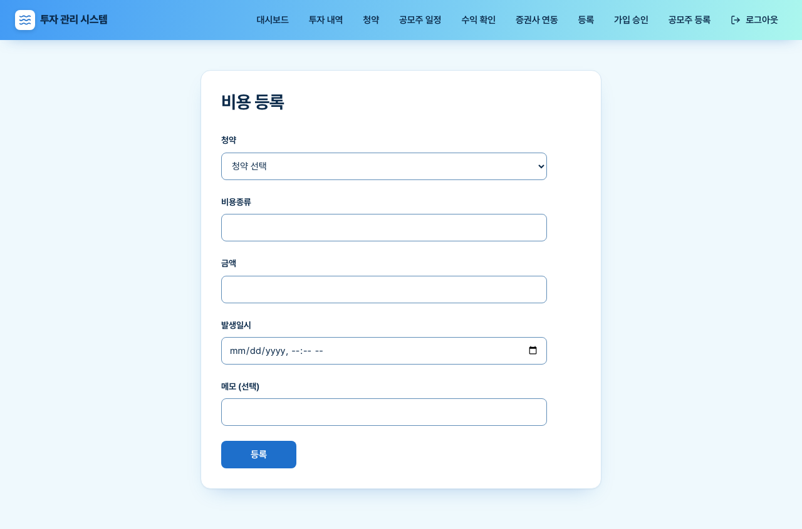
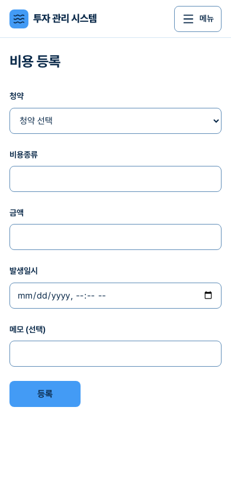
6. 수익 확인하기
매도까지 기록하면 수익이 자동으로 계산됩니다. 계산은 매도한 수량만큼의 배정분을 기준으로 합니다(팔지 않은 주식은 수익에 들어가지 않습니다).
| 항목 | 계산 |
|---|---|
| 총 투자금 | 배정단가 × 매도수량 (모든 매도의 합) |
| 최종수익금 | 매도금액 − 매도한 수량만큼의 배정금액 − 매도한 수량 비율만큼의 기타 비용 − 공모주수수료 − 세금 및 기타 수수료 (매도 등록의 최종수익금과 같은 값입니다) |
| 수익률 | 최종수익금 ÷ 총 투자금 |
| 참여 건수 | 매도가 있는 서로 다른 배정의 수 (한 배정을 나눠 팔아도 1건) |
대시보드
상단 메뉴 대시보드는 위 네 가지 카드(총 투자금, 최종수익금, 수익률, 참여 건수)를 한눈에 보여 줍니다. 위쪽 탭으로 집계 기준을 바꿉니다.
- 전체 — 모든 투자자·증권사의 합계
- 투자자별, 증권사별 — 투자자 또는 증권사별로 나눈 집계
- 월별, 연도별 — 선택한 달 또는 해의 집계. 화면 위쪽에서 ◀ 이전 달 / 다음 달 ▶(연도별은 이전·다음 연도)로 옮기거나 연도·월을 직접 입력합니다.
아래의 "투자 내역 화면으로 이동" 링크로 투자 내역을 바로 열 수 있습니다.
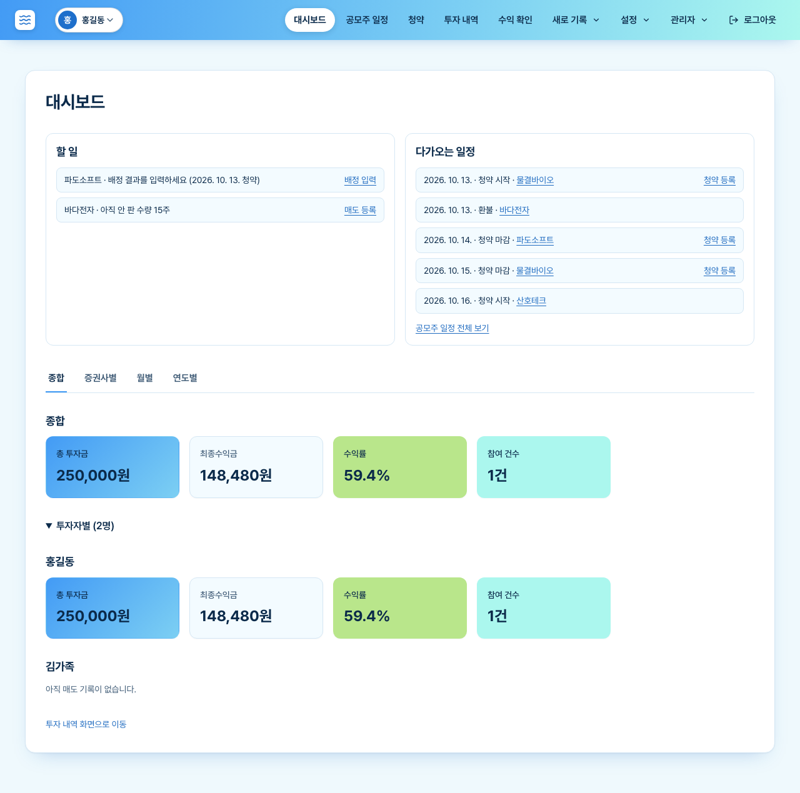
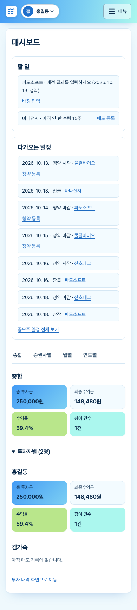
수익 확인
상단 메뉴 수익 확인에서는 매도 한 건 한 건의 수익을 볼 수 있습니다. 위쪽에서 조회 방식을 고릅니다.
- 매도건별 — 매도건 ID를 입력하고 조회를 누릅니다.
- 투자자별 — 투자자를 고르고 조회를 누르면 그 투자자의 매도 목록이 표로 나옵니다.
표의 열은 매도ID, 매도일, 배정ID, 수량, 매도금액, 취득금액, 비용금액, 공모주수수료, 세금 및 기타, 기타비용, 실현손익(공모주수수료를 빼기 전), 최종수익금입니다. 매도가 없으면 "매도 내역이 없습니다."가 표시되고, 조회에 실패하면 "매도건을 찾을 수 없습니다." 또는 "투자자를 찾을 수 없습니다."가 나옵니다(ID나 투자자를 다시 확인합니다).
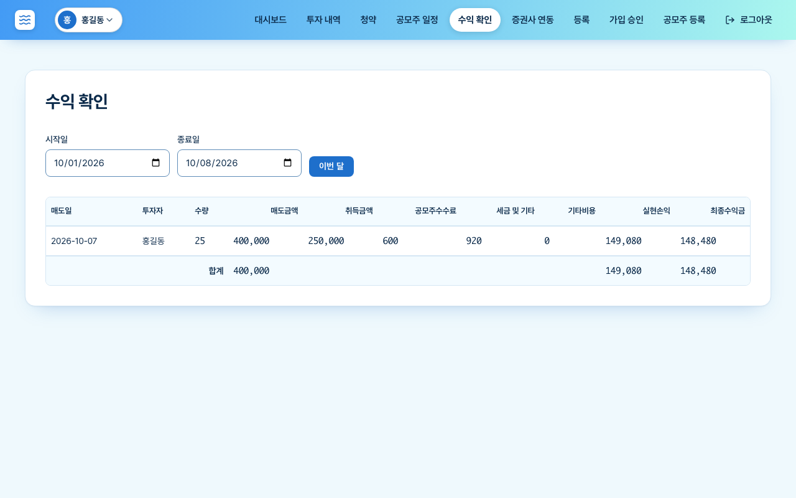
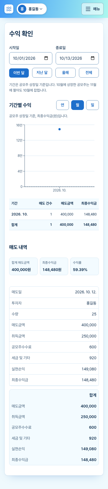
투자 내역
상단 메뉴 투자 내역은 청약 기록을 표로 모아 보여 줍니다(청약 ID, 청약일, 공모주명, 투자자, 청약수량, 상태, 잔여수량). 위쪽 필터로 범위를 좁힙니다.
- 투자자 — 선택하면 그 투자자의 기록만 봅니다.
- 증권계좌 — 투자자를 먼저 고른 뒤 선택할 수 있습니다.
- IPO ID — 숫자로 입력합니다. 비워 두면 전체를 조회합니다.
- 초기화 — 필터를 모두 지웁니다.
표의 행을 누르면 아래에 상세가 열려 청약 정보, 배정 정보, 매도 내역을 볼 수 있고 오른쪽 위 닫기 버튼으로 닫습니다. 필터 상태는 주소(URL)에 저장되므로 주소를 복사하면 같은 조건의 화면을 다시 열 수 있습니다.
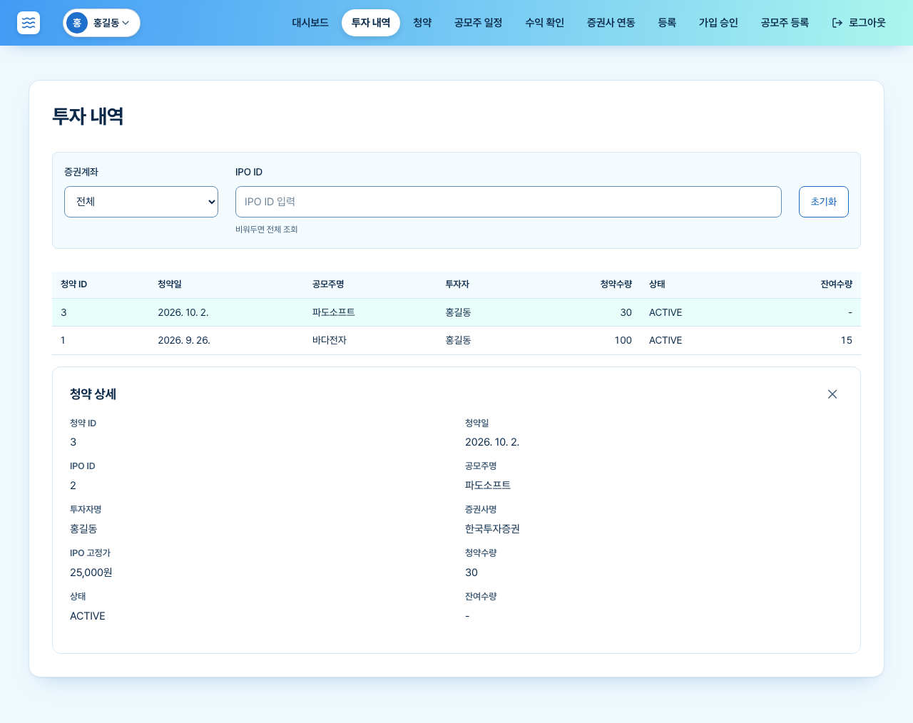
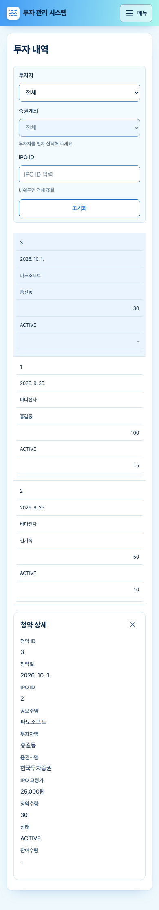
7. 증권사 연동 (한국투자증권)
한국투자증권 계좌의 매도 내역을 조회해서 매도 기록을 자동으로 채웁니다. 조회 전용이라 주문·정정·취소는 하지 않습니다. 입력한 키는 암호화해 서버에 저장하고 화면에 다시 보여주지 않습니다. 현재 지원하는 증권사는 한국투자증권(KIS)뿐이며, 다른 증권사 계좌는 "이 증권계좌의 증권사는 아직 API 연동을 지원하지 않습니다."로 표시됩니다.
1단계. 증권사에서 키 발급받기
한국투자증권 Open API 개발자센터(KIS Developers)에서 서비스를 신청하면 APP Key와 APP Secret을 받습니다. 신청 요건은 한국투자증권 계좌 보유와 HTS 서비스 신청입니다. 화면 구성은 증권사 사정으로 바뀔 수 있으니 안내에 따라 진행하세요.
- 사용기간은 신청일부터 1년입니다. 갱신하면 키가 새로 발급되므로 이 서비스에서도 키를 교체해야 합니다.
- 3개월 이상 거래가 없으면 서비스가 해지될 수 있다는 안내가 있습니다. 해지되면 다시 신청합니다.
- 접근토큰은 1일마다 만료되지만 서버가 자동으로 다시 발급하므로 직접 할 일은 없습니다.
- APP Secret은 발급 직후에만 볼 수 있는 경우가 많으니 안전한 곳에 보관하세요.
2단계. 증권계좌 연결하기
- 상단 메뉴 증권사 연동을 누릅니다.
- 투자자와 증권계좌를 차례로 고릅니다. 증권계좌가 한국투자증권이어야 연결 폼이 나옵니다.
- 앱키와 앱시크릿을 입력합니다(입력칸은 가려집니다).
- 키 발급일(증권사 서비스 신청일)을 확인합니다. 기본은 오늘이며, 실제 신청일과 다르면 고칩니다. 사용기간 만료 안내가 이 날짜에서 계산됩니다.
- 연결을 누릅니다.
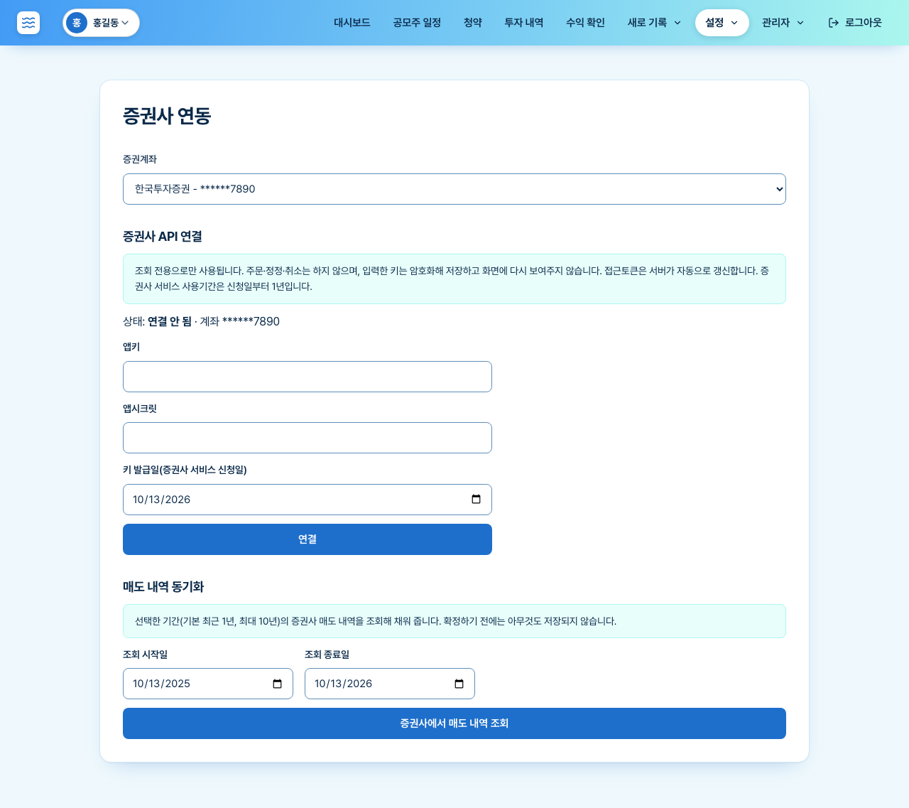
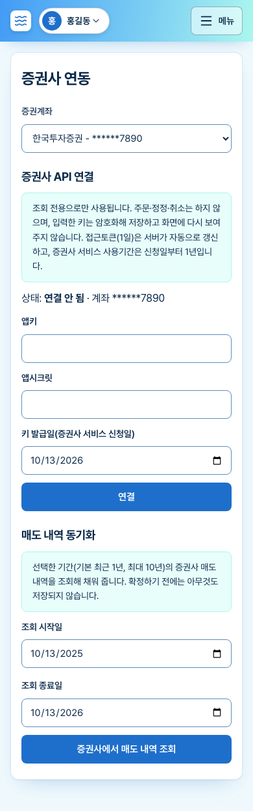
연결되면 상태가 연결됨으로 바뀌고 마스킹된 계좌번호와 사용기간 만료일이 표시됩니다. 연결할 때는 증권사를 호출하지 않으므로 키가 틀려도 이때는 알 수 없고, 첫 조회에서 확인됩니다.
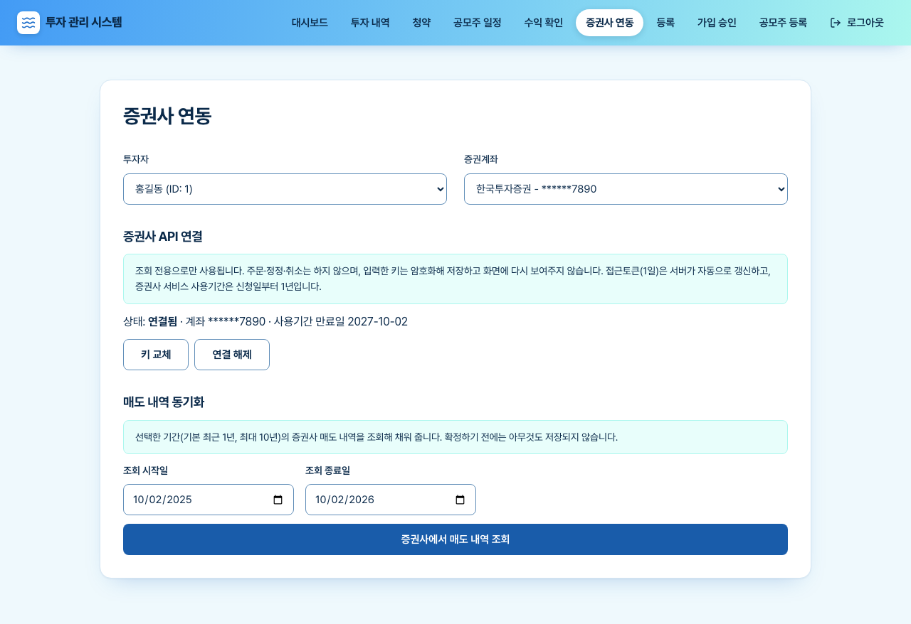
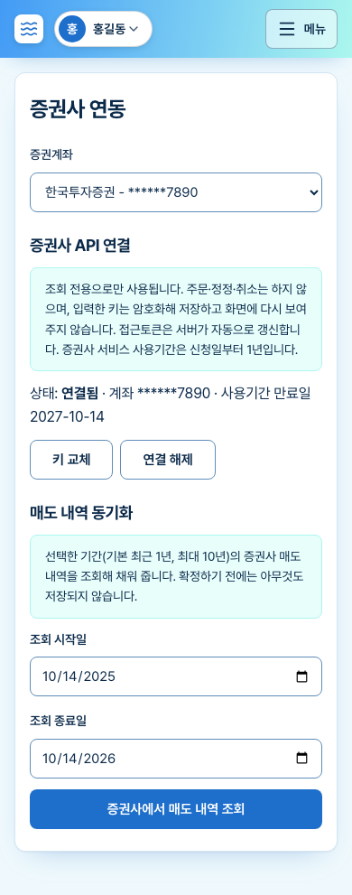
3단계. 매도 내역 가져오기
- 조회 시작일·종료일을 고릅니다. 기본은 오늘까지 최근 1년이며 최대 10년까지 가능합니다. 기간을 바꾸는 것만으로는 증권사를 호출하지 않습니다.
- 증권사에서 매도 내역 조회를 누릅니다. 결과 위에 조회한 기간이 표시됩니다.
- 매칭된 매도(내가 등록한 배정과 연결된 건)는 표에서 단가·금액·세금 및 기타·공모주수수료를 고칠 수 있습니다. 세금 및 기타에는 증권사가 알려 준 수수료와 세금의 합계가, 공모주수수료에는 기본 2,000원이 들어갑니다(같은 배정의 둘째 매도부터는 0원). 등록할 건만 체크하고 선택한 N건 매도로 등록을 누르면 저장됩니다. 확정하기 전에는 아무것도 저장되지 않습니다.
- 같은 날 같은 종목의 분할 매도는 증권사가 하루 단위로 합쳐서 알려 줍니다. 단가는 금액÷수량으로 계산한 값이니 필요하면 고칩니다.
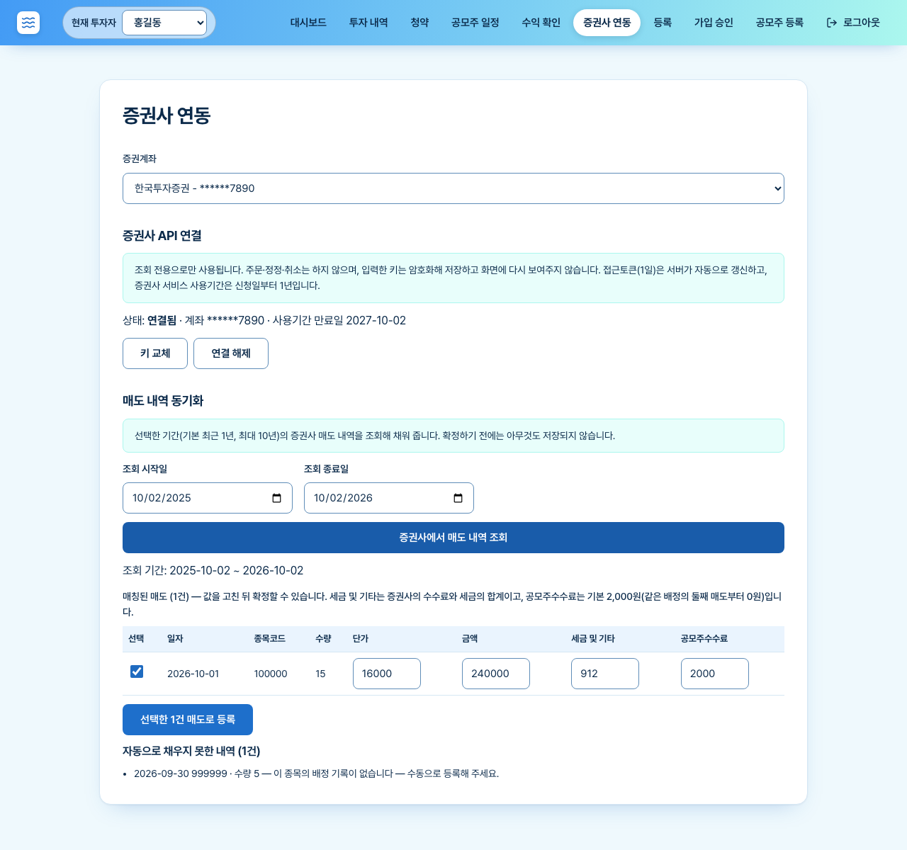
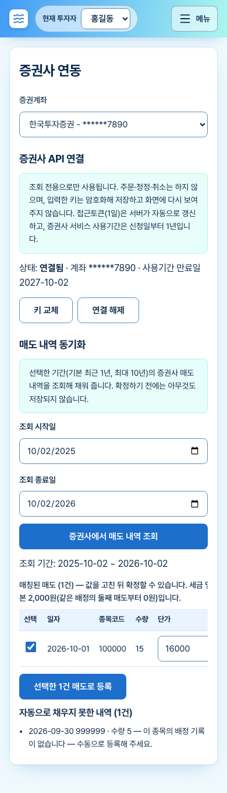
위 화면의 값은 설명용 예시입니다.
자동으로 채우지 못한 내역
| 안내 문구 | 뜻과 조치 |
|---|---|
| 이 종목의 배정 기록이 없습니다 | 청약·배정을 등록하지 않은 종목입니다. 청약·배정을 먼저 등록하거나 매도를 직접 등록하세요. |
| 같은 종목의 배정이 여러 건이라 자동으로 고를 수 없습니다 | 어느 배정인지 정할 수 없습니다. 직접 등록하세요. |
| 이미 같은 내용으로 등록돼 있습니다 | 이미 등록한 매도입니다. 할 일은 없습니다. |
| 그날 등록된 매도 합계가 증권사 집계와 다릅니다 | 이미 등록한 매도의 수량·금액 합이 증권사 값과 다릅니다(수수료·세금은 비교하지 않습니다). 직접 확인하세요. |
| 매도 수량이 배정 수량을 넘습니다 | 배정 수량보다 많이 팔린 것으로 조회됩니다. 배정 수량이나 매도 내역을 확인하세요. |
| 종목코드가 없는 IPO의 배정 N건은 자동으로 맞출 수 없습니다 | 해당 공모주에 종목코드가 없어 연결할 수 없습니다. 직접 등록하세요. |
조회 횟수 제한. 같은 증권계좌는 10초에 1번, 1시간에 30번까지 조회할 수 있습니다. 넘으면 "요청이 너무 잦습니다. N초 뒤에 다시 시도해 주세요."가 표시됩니다.
키 교체와 연결 해제
- 만료 안내: 사용기간 만료일이 30일 안으로 다가오거나 지나면 화면에 경고가 나옵니다. 증권사에서 서비스를 갱신하면 키가 바뀌니 그때 교체하세요.
- 키 교체: 키 교체를 누르고 새 앱키·앱시크릿·발급일을 입력한 뒤 새 키로 교체를 누릅니다.
- 연결 해제: 확인 후 저장된 키가 삭제됩니다. 다시 쓰려면 키를 새로 입력해야 합니다.
- 키 등록·교체는 같은 계정에서 10분에 5번까지 가능합니다.
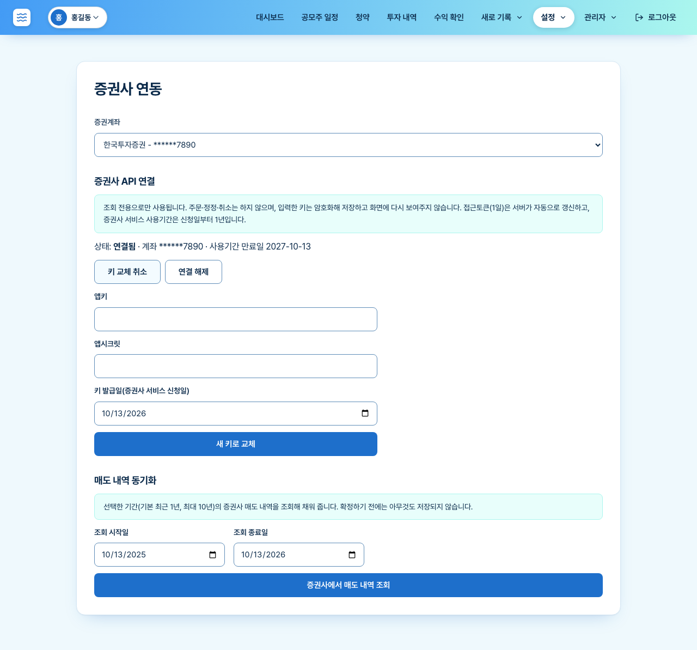
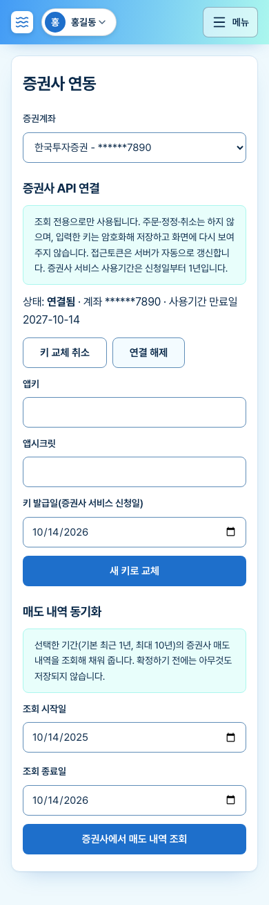
8. 관리자 기능과 문제 해결
관리자 계정으로 로그인하면 상단 메뉴에 가입 승인과 공모주 등록이 보입니다(일반 계정에는 보이지 않습니다). 화면 오른쪽 끝의 로그아웃은 모든 계정에 보이며, 누르면 로그인 화면으로 돌아갑니다.
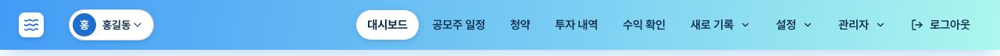
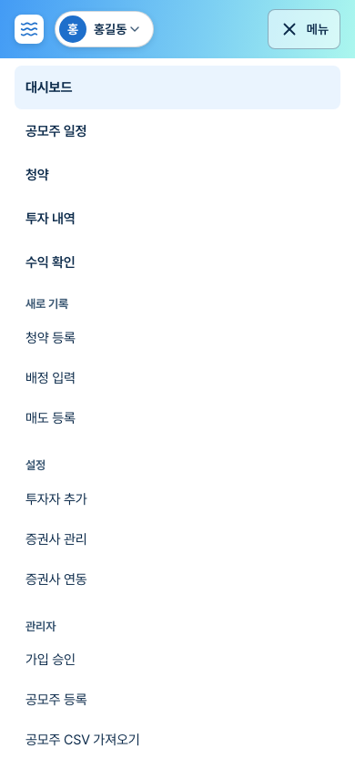
가입 승인
비공개 운영에서는 가입해도 관리자가 승인하기 전에는 로그인할 수 없습니다. 가입 승인 화면에서 승인 대기 계정을 확인하고 승인을 누르면 그 계정이 로그인할 수 있습니다. 전체 보기로 바꾸면 승인된 계정도 보이며, 승인 취소를 누르면 그 계정은 바로 로그아웃되고 다시 승인될 때까지 로그인할 수 없습니다. 본인 계정은 취소할 수 없습니다.
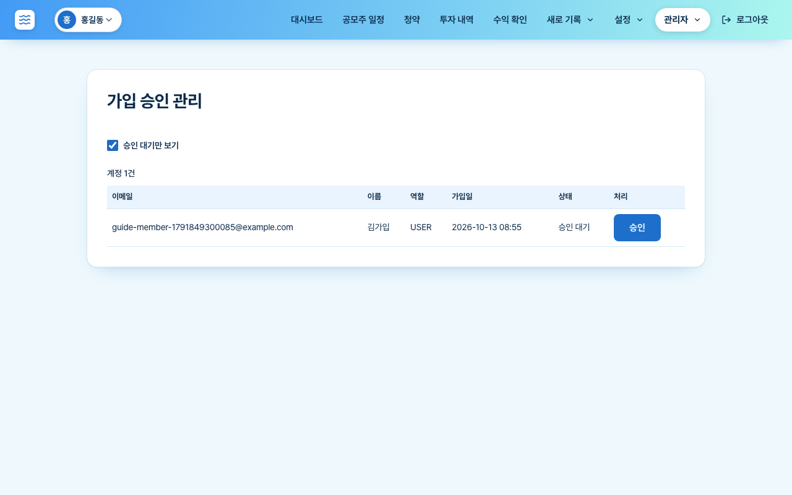
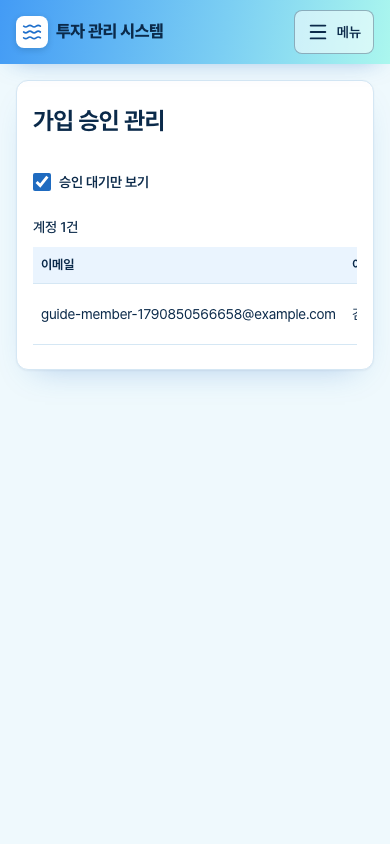
공모주 직접 등록
공모주 일정은 자동으로 채워지지만, 빠진 공모주가 있으면 관리자가 공모주 등록 화면에서 직접 추가합니다. 회사명, 공모주명, 청약 시작일, 청약 종료일이 필수이고 종목코드, 회차, 희망 공모가 하단·상단, 확정 공모가, 상장일, 공모 주식 수는 선택입니다. 공모주 등록 버튼을 누르면 공모주 일정 화면으로 이동합니다.
| 표시되는 문구 | 해결 방법 |
|---|---|
| 청약 종료일은 시작일보다 빠를 수 없습니다. | 종료일을 시작일 이후로 고칩니다. |
| 희망 공모가 하단은 상단보다 클 수 없습니다. | 하단·상단 값을 확인합니다. |
| 0 이상이어야 합니다. | 금액·수량에 음수를 쓰지 않습니다. |
| 이미 등록된 IPO입니다. | 같은 공모주가 이미 있습니다. 공모주 일정에서 확인합니다. |
| 관리자만 공모주를 등록할 수 있습니다. | 관리자 계정으로 로그인해야 합니다. |
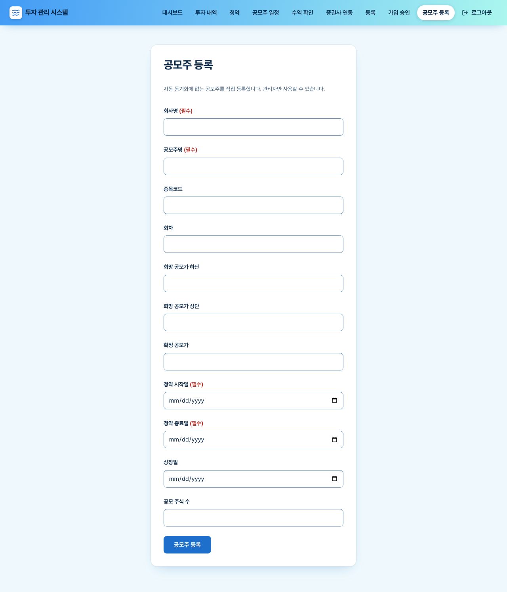
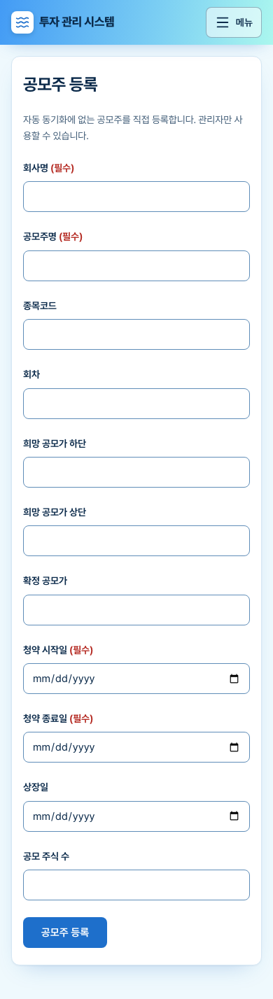
운영 설정(서버 관리자용)
- 가입 모드(
APP_SIGNUP_MODE):APPROVAL(기본, 승인 뒤 로그인),OPEN(누구나 가입해 바로 로그인),CLOSED(가입 중단). - 첫 관리자는 가입한 뒤 서버에서
scripts/promote-admin.sh 이메일로 지정하고 다시 로그인합니다. - 서버 암호화 키는 DB 백업과 다른 곳에 보관하세요. 잃어버리면 저장된 계좌번호와 증권사 키를 되살릴 수 없습니다.
자주 보는 문구와 해결
| 표시되는 문구 | 원인 | 조치 |
|---|---|---|
| 관리자 승인 대기 중입니다 | 가입 승인 전 | 관리자에게 승인을 요청합니다. |
| 이메일 또는 비밀번호가 올바르지 않습니다. | 입력 오류 | 다시 입력합니다. |
| 증권사 인증에 실패했습니다. 키가 만료됐거나 잘못됐을 수 있으니 키를 갱신해 주세요. | 키가 틀렸거나 사용기간이 지났거나 서비스가 해지됨 | 증권사에서 서비스 상태를 확인하고 새 키로 교체합니다. |
| 요청이 너무 잦습니다. N초 뒤에 다시 시도해 주세요. | 조회·키 변경 횟수 제한 | 안내된 시간 뒤 다시 시도합니다. |
| 증권사 요청 제한에 걸렸습니다. 잠시 후 다시 시도해 주세요. | 증권사의 호출 제한 | 1분쯤 뒤 다시 시도합니다. |
| 증권사 조회에 실패했습니다. 잠시 후 다시 시도해 주세요. | 증권사 서버 오류나 일시 장애 | 잠시 뒤 다시 시도하고, 계속되면 증권사 공지를 확인합니다. |